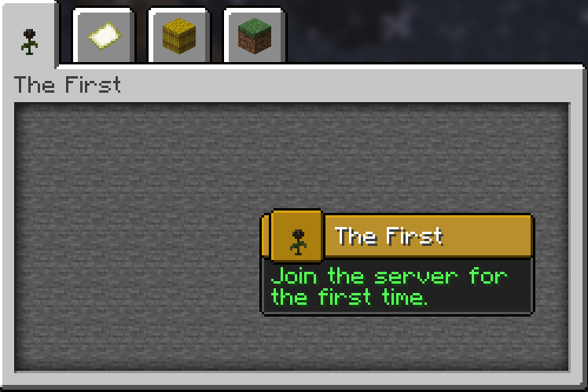

The Advancement API allows you to add custom advancements to the game. Unlike standard datapack advancements, this API supports custom reward types and criteria directly through your plugin.
Registering an Advancement
To start, you need to set up a dedicated class to hold your advancement registry, similar to item registration.
public final class Advancements {
public static final DeferredRegistry<Advancement> ADVANCEMENTS = DeferredRegistry.create(Registries.ADVANCEMENTS, AbyssalLibExample.PLUGIN_ID);
// Registration will be done here
}
Next, use the Advancement.Builder to create a root advancement. A root advancement acts as the starting point of a new advancement tab.
Display: Configures the visual representation in the GUI, including the icon, title, description, frame type (Task, Goal, Challenge), background, and notification settings.
Criterion: Defines the condition required to unlock the advancement. In this case, AutoGrantCriterion unlocks it immediately upon joining the server.
public final class Advancements {
public static final DeferredRegistry<Advancement> ADVANCEMENTS = DeferredRegistry.create(Registries.ADVANCEMENTS, AbyssalLibExample.PLUGIN_ID);
public static final Advancement ROOT = ADVANCEMENTS.register("root", id -> Advancement.builder(id)
.display(AdvancementDisplay.builder()
.icon(new ItemStack(Material.WITHER_ROSE))
.title(Component.text("The First"))
.description(Component.text("Join the server for the first time."))
.frame(AdvancementFrame.TASK)
.background(Key.key("minecraft", "gui/advancements/backgrounds/stone"))
.announceToChat(true)
.showToast(true)
.build()
)
.criterion("auto", new AutoGrantCriterion())
.build()
);
}
Once you apply the registry in your main class (Advancements.ADVANCEMENTS.apply()), you can view the new tab in-game.

To expand the tree, you must set the parent of your new advancement to either the root or an existing child advancement. We will also add a custom ItemReward that executes when the specific ItemHasCriterion is met.
public static final Advancement GET_DIAMOND = ADVANCEMENTS.register("get_diamond", id -> Advancement.builder(id)
.parent(ROOT.getId()) // Links this to the root advancement
.display(AdvancementDisplay.builder()
.icon(new ItemStack(Material.DIAMOND))
.title(Component.text("Shiny!"))
.description(Component.text("Get a diamond for the first time."))
.frame(AdvancementFrame.GOAL)
.announceToChat(true)
.showToast(true)
.build()
)
.criterion("has_diamond", new ItemHasCriterion(ItemPredicate.builder()
.material(Material.DIAMOND)
.build())
)
.reward(new ItemReward(new ItemStack(Material.EMERALD))) // Grants an Emerald upon completion
.build()
);
When you obtain a diamond in-game, the advancement will trigger and grant the reward.
Creating an Advancement
To create an advancement using JSON, create a file at plugins/AbyssalLib/advancements/<namespace>/<id>.json.
For this example, we will make a root advancement at abyssallib_example/root.json. A root advancement acts as the starting point of a new advancement tab.
display: Configures the GUI visuals (icon, parsed MiniMessage description, frame type, and notification settings).
criteria: Defines the condition to unlock the advancement. Here, the abyssallib:auto_grant type unlocks it instantly.
{
"display": {
"title": "The First",
"description": "<gray>Join the server for the first time.</gray>",
"icon": {
"id": "minecraft:wither_rose"
},
"frame": "TASK",
"background": "minecraft:gui/advancements/backgrounds/stone",
"show_toast": true,
"announce_to_chat": true,
"hidden": false
},
"criteria": {
"auto": {
"type": "abyssallib:auto_grant"
}
}
}
After saving the file, launch the server to view the advancement in-game.
To add more advancements to this tab, create a new JSON file and define the parent key pointing to your root advancement's namespace and ID. We will also utilize the rewards array to give the player an item.